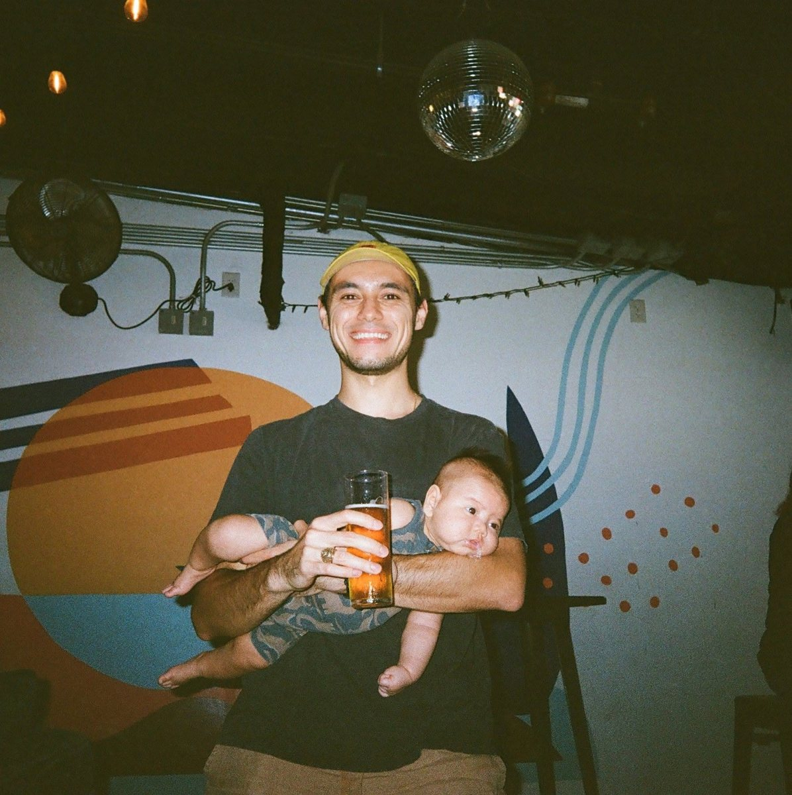

Hi! My name is Juan.
I'd like to think I'm pretty decent at a few things.
Some of it might be talent but more likely it's just stubborn repetition. I can make a decent cappuccino, dribble a soccer ball over 100 times (on a good day), make my son giggle, and bake spherical turkeys.
Professionally I try and make the world a little bit better every day, as a barista brewing piccolos or whisking matcha, and as a data scientist training models in healthcare and education.

Where to go
Caracas, coffee, training, and the amount of travelling Genny and I do.
Go through → WorkRisk models over ten million lives, a blood test, a strategy advisor for colleges. The part that fits on a resume.
Go through → Reading listWhat I'm writing, and what I've read since a weekend in 2025 got out of hand.
Go through → PhotographyMostly Genny, and now Silas. A small memory card and not much of a plan.
Go through →Say hello.
A project, a question, or where to get good coffee in Austin. All three get answered.
juan@acosta-li.com